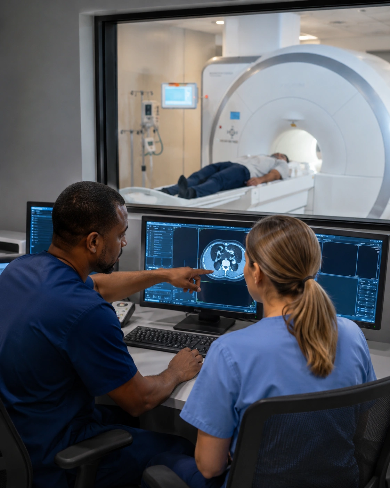

Quality assurance accuracy
Accuracy that supports confident clinical decisions.
Physician-led teleradiology
24 HOURS
Day, evening, and nighttime teleradiology coverage with responsive communication and personal support tailored to your hospital.
Built around the people who depend on us
ATR supports hospitals, physicians, and radiologists with reliable 24-hour coverage, accurate reporting, and personal communication when every moment matters.
Hospitals & Medical Centers

Radiologist Careers
Technology & Support
Our mission
ATR supports hospitals and medical professionals through responsive, personal teleradiology service, working as a trusted extension of each client’s care team. We stay available, communicate directly, and adapt to the needs of the organizations we serve—because behind every study is a patient waiting for accurate answers and reliable care.
Performance and experience
Accuracy that supports confident clinical decisions.
Reliable information when care is moving quickly.
Dependable reporting whenever care continues.
A longstanding commitment to hospitals, physicians, and patients.
Turnaround and quality figures shown for July 2026.
Who we are
Advanced TeleRadiology is owned and operated by practicing radiologists who understand the responsibility behind every interpretation. Our board-certified, fellowship-trained physicians were educated and trained at leading institutions in the United States and provide reliable coverage, accurate reporting, and direct clinical communication around the clock.
ATR was built around partnership. We work alongside local physicians and hospital radiology teams, listen closely to what each organization needs, and make every effort to provide responsive, personal support—not simply another contract.
Services for hospitals
ATR provides 24-hour teleradiology coverage for hospitals and radiology groups, with preliminary and final interpretation across all study types and imaging modalities—supported by responsive communication, technology, analytics, and implementation support.
ATR supports California hospitals, medical centers, and radiology groups with flexible teleradiology coverage across all study types and imaging modalities.
Completed reports are made available through ATR’s web portal when studies are completed.
ATR keeps clinical communication personal and accessible rather than placing distance between the interpreting radiologist and the hospital team.
ATR helps clients monitor service performance and reduce unnecessary workflow friction.
ATR’s technical team works with hospital IT personnel to establish and maintain reliable connectivity.
Trusted at scale
Responsive, personal support backed by the experience and clinical capacity to serve hospitals and radiology groups across California.
The ATR experience
ATR is designed to be available when your hospital needs support, responsive when questions arise, and flexible enough to work around the people, systems, and clinical priorities already in place.
Day, evening, and nighttime coverage is structured around the hours and reporting needs of the hospitals and radiology groups we support.
Ordering physicians can reach ATR radiologists when clarification, communication, or immediate coordination matters.
ATR makes every effort to work with each organization’s workflow, priorities, and evolving coverage needs without making support feel distant or impersonal.

Technology in service of care
ATR coordinates with hospital IT teams to establish connectivity, monitor operations, and help the service fit naturally into existing imaging workflows.
How information moves
What to expect
A typical implementation begins with listening, coordination, and preparation—then continues with reporting, communication, and technical support after coverage starts.
We listen to your coverage needs, current workflow, and service priorities.
ATR coordinates with your IT team to establish reliable connectivity and workflow access.
Hospital staff and physicians receive guidance and portal training before launch.
Reporting, critical communication, analytics, and technical monitoring continue after implementation.
Radiologist careers
Join a physician-led teleradiology practice serving patients through reliable overnight care. ATR is currently seeking full-time teleradiologists.
Responsive, personal radiology support
Tell us the hours, coverage needs, and reporting support you’re looking for. We’ll listen, learn your workflow, and work with you to determine how ATR can help.